Nintendo Switch (Posse de Thomas Lothhammer Bohn)
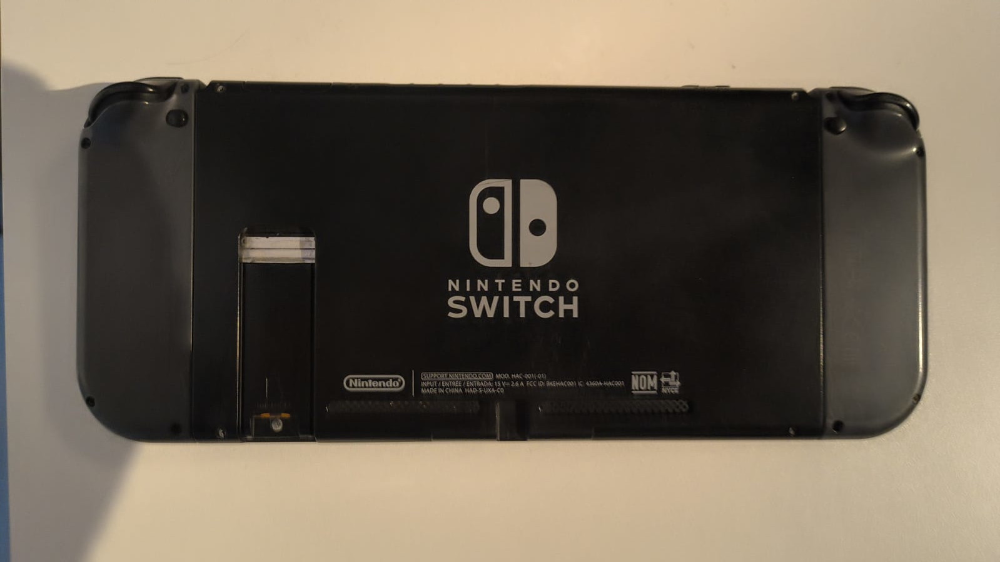
Nintendo Switch
O Nintendo Switch é um console desenvolvido pela Nintendo
e lançado mundialmente em março de 2017.
O aparelho foi projetado para funcionar em diferentes
formas de utilização, podendo ser conectado à televisão
através de uma dock ou utilizado como um console portátil
através de sua própria tela.
Essa característica fez do Switch uma plataforma híbrida,
combinando características tradicionalmente associadas
aos consoles domésticos e aos portáteis da Nintendo.
O sistema utiliza controles removíveis chamados Joy-Con,
que podem ser utilizados presos ao console, separados
ou acoplados a um suporte.
História e Desenvolvimento
O Nintendo Switch foi desenvolvido durante um período
de mudanças importantes para a Nintendo.
Após o desempenho comercial abaixo das expectativas do
Wii U, a empresa procurou desenvolver uma plataforma
que pudesse reunir suas operações de consoles domésticos
e portáteis em um único ecossistema.
O projeto foi apresentado oficialmente em 2016 sob o
nome Nintendo Switch e chegou às lojas em 3 de março
de 2017.
O conceito central era permitir que o jogador pudesse
continuar sua partida ao retirar o console da dock,
transformando-o rapidamente de um aparelho ligado à
televisão em um portátil.
Mercado Brasileiro
O Nintendo Switch conquistou presença significativa
no mercado brasileiro desde seu lançamento.
Durante os primeiros anos, grande parte das unidades
encontradas no país era importada por lojas e
distribuidores independentes.
Posteriormente, a Nintendo ampliou sua atuação oficial
no Brasil, disponibilizando produtos, jogos, acessórios
e serviços para o mercado nacional.
O crescimento da distribuição oficial também contribuiu
para tornar mais acessíveis os jogos digitais, acessórios
e diferentes modelos do console.
Contexto Histórico

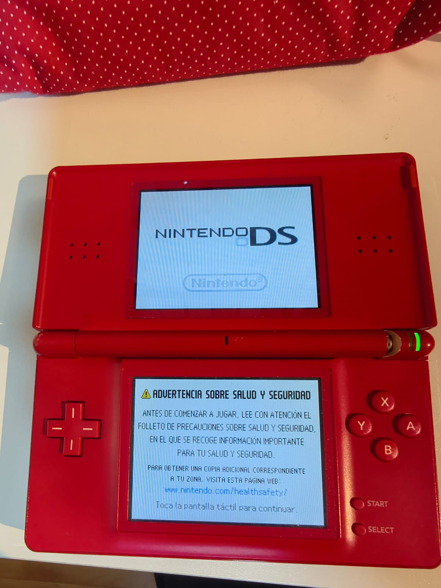
Antes do Switch, a Nintendo mantinha duas linhas
principais de hardware: os consoles domésticos,
como Wii e Wii U, e os consoles portáteis,
como Nintendo DS e Nintendo 3DS.
O Switch representou uma mudança importante nessa
estratégia, pois passou a ocupar simultaneamente
os espaços de console doméstico e portátil.
Na mesma geração, o Switch competiu principalmente
com o PlayStation 4 e o Xbox One e, posteriormente,
com o PlayStation 5 e Xbox Series X|S.
A Nintendo utilizou uma estratégia diferente das
concorrentes, concentrando-se em uma experiência
híbrida e em seus próprios personagens e franquias.
Jogos e Acessórios
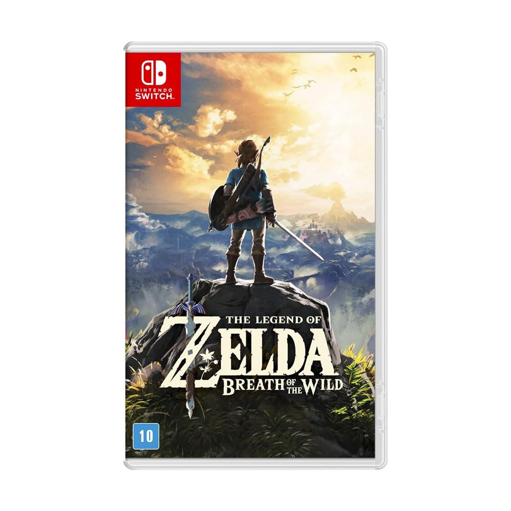
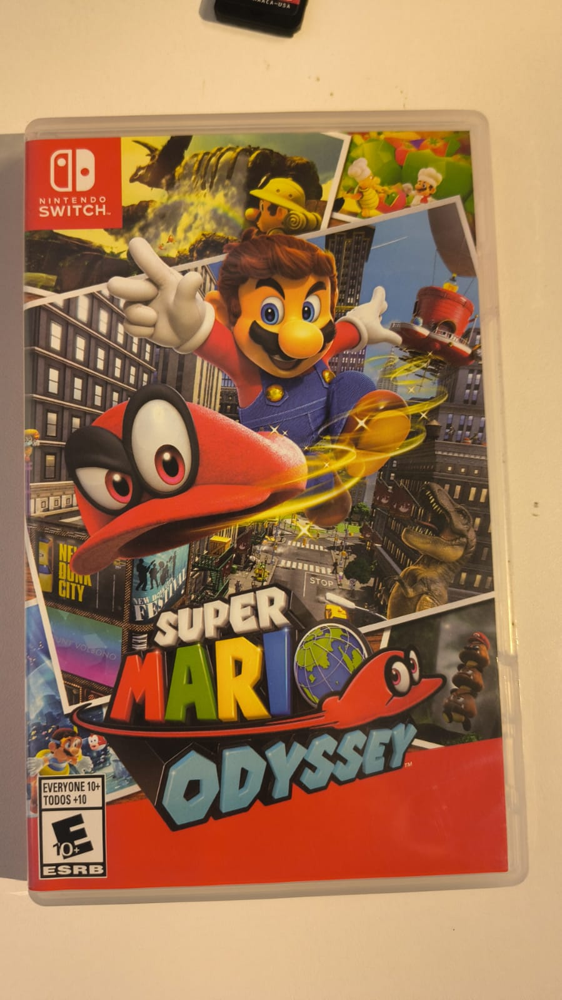
O Nintendo Switch recebeu uma grande quantidade de jogos
durante sua vida comercial, incluindo títulos desenvolvidos
pela própria Nintendo e jogos de outras empresas.
Entre os principais títulos da plataforma estão
The Legend of Zelda: Breath of the Wild,
Super Mario Odyssey, Mario Kart 8 Deluxe,
Super Smash Bros. Ultimate, Animal Crossing:
New Horizons, Splatoon 2, Splatoon 3,
Metroid Dread e Pokémon Scarlet e Violet.
O console também recebeu versões de jogos originalmente
lançados em outras plataformas, além de diversos jogos
independentes e produções japonesas.
Os acessórios incluem Joy-Con, Pro Controller,
Nintendo Switch Dock, volante para Joy-Con,
Ring-Con e diferentes acessórios oficiais e licenciados.
Cartuchos e Mídia Física
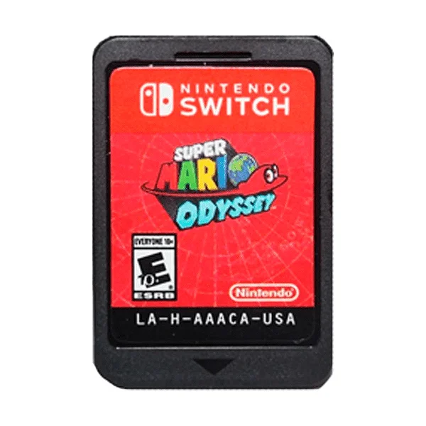
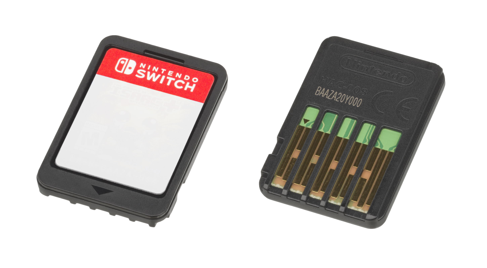
Diferentemente dos principais consoles domésticos da
geração anterior, o Nintendo Switch utiliza pequenos
cartões de jogo, conhecidos como Game Cards.
Esses cartões permitem distribuir jogos fisicamente
em um formato compacto, adequado à proposta portátil
do sistema.
Os jogos também podem ser adquiridos digitalmente
através da Nintendo eShop e armazenados na memória
interna ou em cartões microSD compatíveis.
Alguns títulos físicos, dependendo do jogo e da edição,
podem exigir downloads adicionais para completar
determinados conteúdos.
Joy-Con
Os Joy-Con são os controles destacáveis do Nintendo
Switch e representam uma das principais características
físicas do console.
Existem Joy-Con esquerdo e direito, cada um contendo
diferentes botões e sensores.
Os controles podem ser conectados às laterais do console,
utilizados separadamente por dois jogadores ou presos
ao Joy-Con Grip para formar um controle tradicional.
Alguns modelos também possuem recursos como giroscópio,
acelerômetro, HD Rumble e, no Joy-Con direito,
leitor NFC.
Nintendo Switch Dock
A Nintendo Switch Dock é a estação utilizada para
conectar o console à televisão e fornecer alimentação
elétrica enquanto o aparelho está encaixado.
O console é conectado à dock através de seu conector
USB-C inferior.
A dock possui conexões para HDMI, alimentação e USB,
permitindo também conectar determinados acessórios
e periféricos.
Quando retirado da dock, o Switch passa automaticamente
para o modo portátil.
Modelos e Variações
O Nintendo Switch recebeu diferentes modelos durante
sua vida comercial.
O modelo original foi lançado em 2017 e possuía uma
tela LCD de 6,2 polegadas.
Em 2019, a Nintendo lançou o Switch Lite, uma versão
exclusivamente portátil com controles integrados
e tamanho reduzido.
Em 2021, chegou o Nintendo Switch OLED Model,
equipado com uma tela OLED maior, suporte ajustável,
dock revisada e outras melhorias físicas.
Também foram lançadas diversas edições especiais
relacionadas a jogos e franquias da Nintendo.
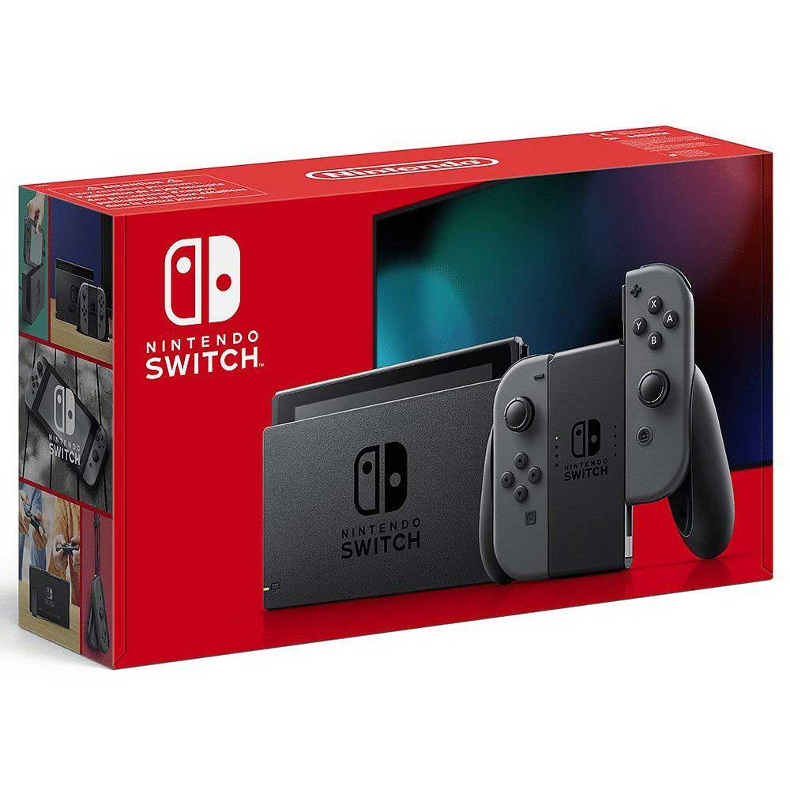
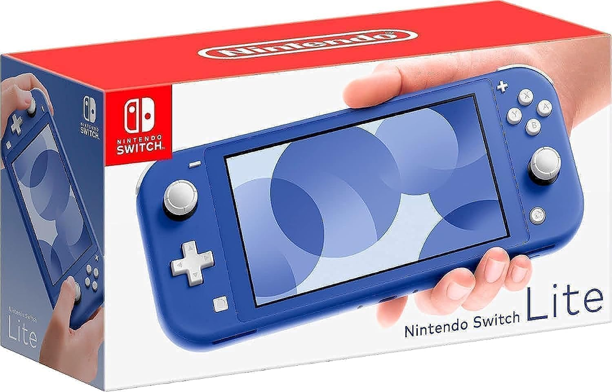
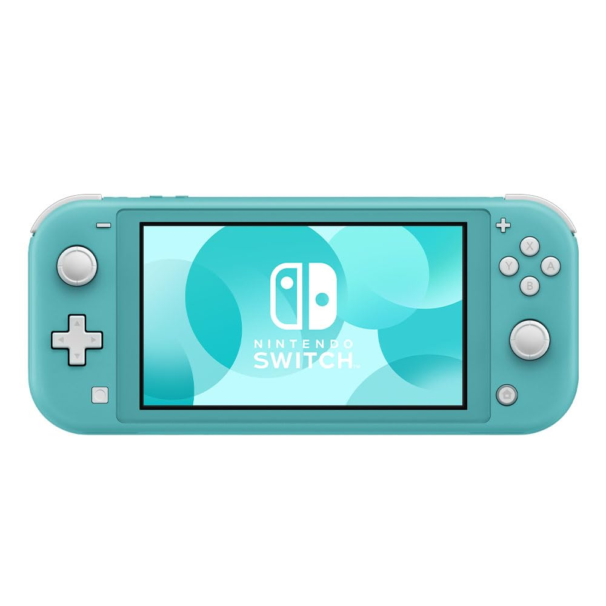
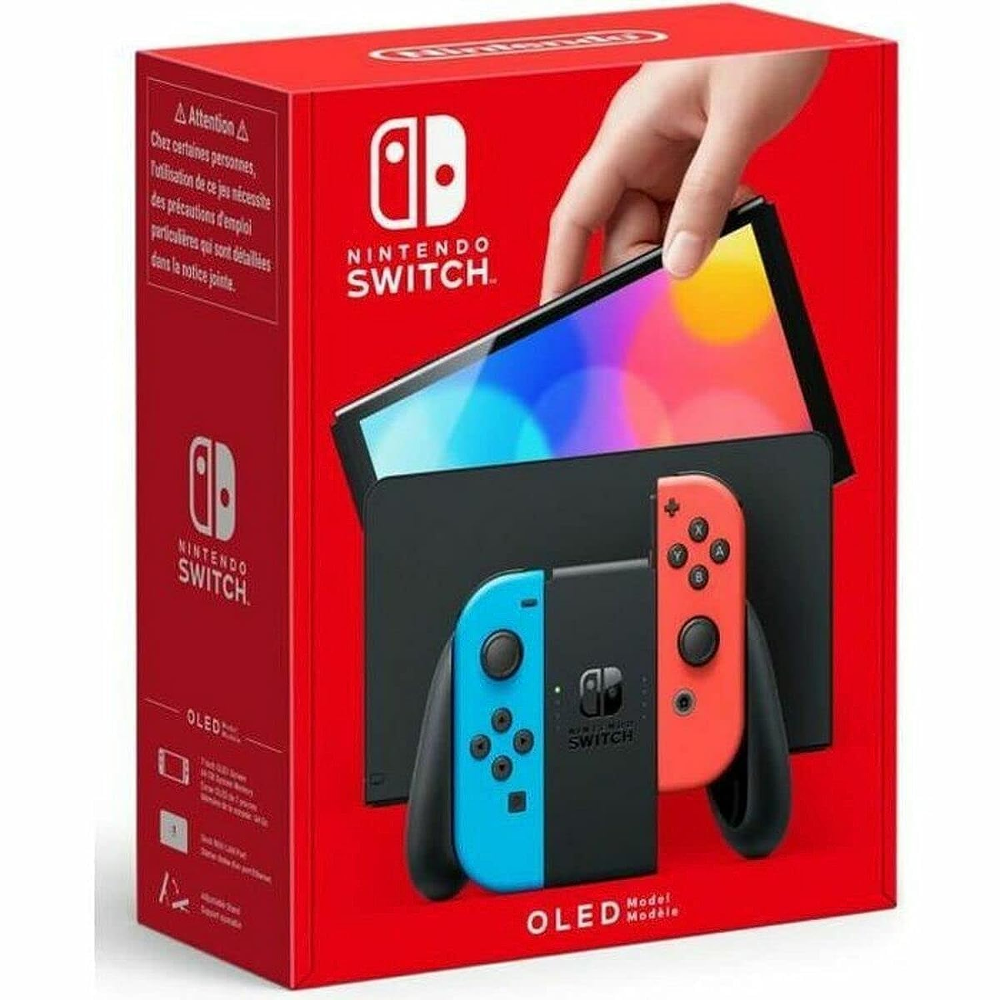

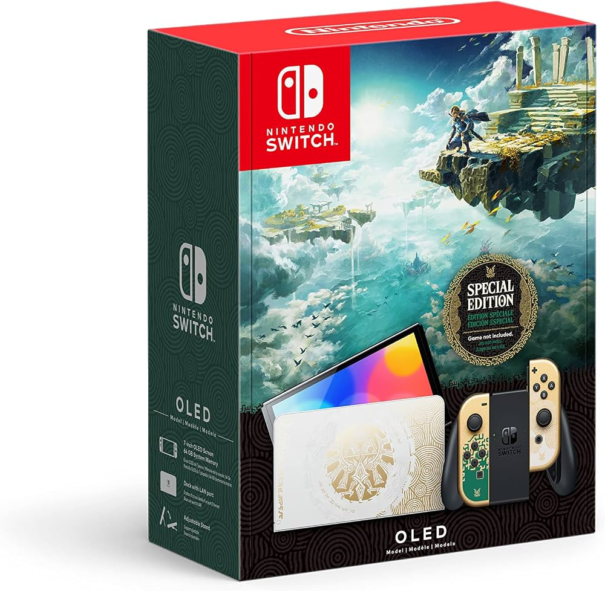
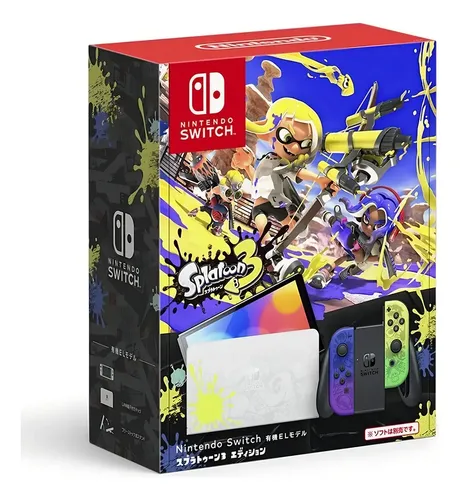